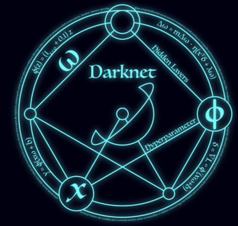
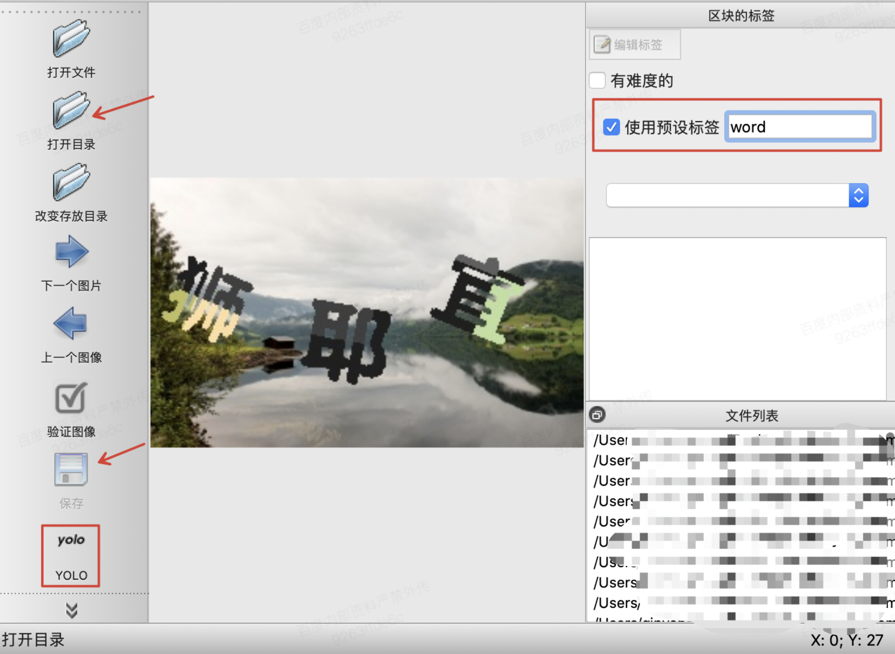
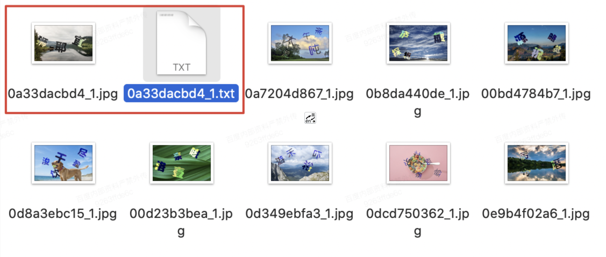
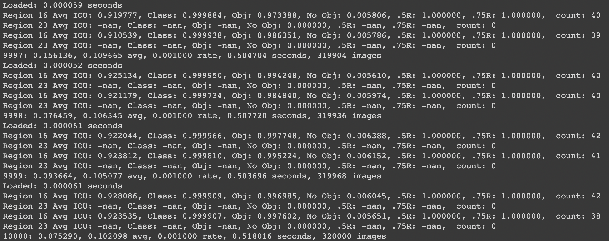
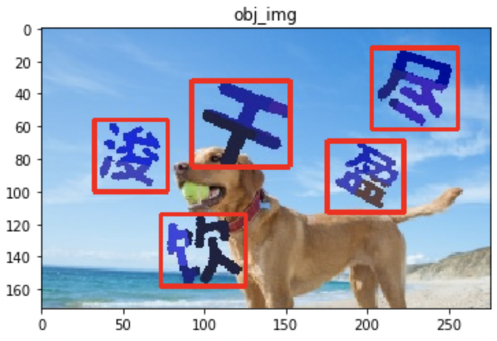
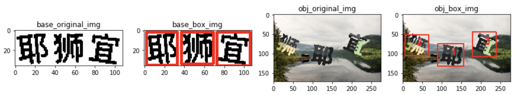

背景
（**本文代码已放在 github**）
点选验证大概形式如下
整个验证形式包含两部分，白底图片中展示需要点击的文字，彩色图片中需要识别并人为点击的文字。
对于白底图片的文字，识别是简单的，通过百度通用OCR识别技术（每日可免费调用50000次）已经可以达到非常高的识别率。或者通过cnocr也能达到不错的识别率，但是对于彩底图片中的文字，百度通用OCR识别与cnocr识别的结果均不理性，初步测试能识别的文字仅有30%+。
本文使用使用darknet进行文字点选验证码识别，darknet 是一个基于YOLO算法的神经网络框架。

计算环境，使用google colab，NVIDIA Tesla V100。
识别思路
- 安装必要的环境
- darknet，用于使用YOLO进行目标检测和分类，安装过程很方便，wget相应package即可
- labelImg，用户标注文字所在位置
- 目标定位
- 文字标注，点选验证码涉及两个文本，一个是白底图片中的文字，一个是彩底图片中的文字
- 训练，需要训练两个模型，分别是白底图片中的文字和彩底图片中的文字
- 预测，对目标文字所在位置进行预测，并批量化生成进行目标分类
- 图片相似度匹配，正常情况下应该是对定位后的目标进行文字分类，不过先进行图片相似度匹配至少有如下特点
- 不需要大量的标记工作，可直接匹配
- 比较灵活，如果后续验证形式不再是文字，变成表情、特定图片，通过图片相似度匹配也可以适应
- 缺点是匹配度可能不够高
- 文字分类，文字分类需要大量的文字标记，初步预估标记的文字数量需要20万+，解决方案可以有
- 先使用百度OCR或cnocr识别，人工复核，然后再对无法识别的文字进行人工标注
- 对已经标注的文字图片做数据增强，增加旋转、缩放、移位等。
- 先训练识别一部分，再对余下部分进行预测，对预测错误的进行部分标注，再训练模型，再预测
darknet安装
wget https://github.com/pjreddie/darknet/archive/master.zip
unzip master.zip > unzip_log 2>&1修改编译文件
vim darknet-master/Makefile
OPENCV=1
GPU=1
CUDNN=1
# 如果是在colab上，可以在命令行修改
# %cd darknet-master
# !sed -i 's/OPENCV=0/OPENCV=1/' Makefile
# !sed -i 's/GPU=0/GPU=1/' Makefile
# !sed -i 's/CUDNN=0/CUDNN=1/' Makefile编译
make如果
labelImg配置与使用
labelImg
使用labelImg标注文本所在位置。
python环境
需要python3环境，推荐使用anaconda 下载 anaconda 推荐选择Graphical install（图形化安装界面）
labelIng依赖
labelIng依赖pyqt5 lxml，可以只用anaconda 的pip安装
如果anaconda的python如果已经配置到环境变量中，可以直接直接使用pip install，如果没有配置到环境变量中，可以使用使用类似 /Users/xxx/opt/anaconda3/bin/python -m pip install
pip install pyqt5 lxml
# 如果上面的安装命令很慢，可以使用如下命令指定国内镜像安装
pip install pyqt5 lxml -i https://pypi.tuna.tsinghua.edu.cn/simple
# 然后编译运行
make qt5py3启用标注工具
git clone git@github.com:tzutalin/labelImg.git
# 由于labelImg会有默认类别，所以需要重新新建一个空文件
cd /labelImg-master/data/
mv predefined_classes.txt predefined_classes.txt.bak
touch predefined_classes.txt
# 回到labelImg原目录
cd /labelImg-master
/Users/xxx/opt/anaconda3/bin/python labelImg.py # 如果在环境变量中可以直接用python labelImg.py简单配置
在命令行运行上述命令后（不要关闭），会自动打开一个页面
主要需要配置3个地方
1.【使用预设标签】 填 word
2.【打开目录】配置需要标注的文件所在目录
3.【更改存放目录】 也配置为需要标注的文件所在目录
3.标注类型改为yolo
修改后如下：

开始标注
创建区块（mac快捷键 w），选出一个框，【正好把文字框住】，点击保存 -> 下一个图片 即可，在源目录下就会出现新增一个txt文件。如下。

txt文件中包含5列数据
- 第1列，是class数据-这里是word，在同目录的 classes.txt 中对应位置
- 第2列，位置的中心x坐标
- 第3列，位置的中心y坐标
- 第4列，相对宽度w
- 第5列，相对高度h
0 0.217391 0.247093 0.166667 0.296512
0 0.251812 0.616279 0.134058 0.244186
0 0.639493 0.572674 0.213768 0.331395目标定位
训练
训练文件预处理
分别创建train和test文件目录（名称不用必须是train和test，在后面配置中指定即可），然后将标记好的数据按比例（一般8:2）分配到目录中，制作训练测试数据
find `pwd`/train -name \*.jpg > train.list
find `pwd`/test -name \*.jpg > test.list模型配置文件
模型配置文件用于配置YOLO到模型结构，这里使用yolov3-tiny.cfg中的结构，重命名为word.cfg，主要需要修改如下几个地方，其他地方酌情修改。
filters=18# 值为3*(classes + 5)
classes=1 #数据集类别（定位器只有1类）标签文件
标签文件为word.labels，即labelImg标记目录下的 classes.txt 文件。
数据集配置
数据集配置文件 word.data ，如下（backup是一个空目录，用于存放训练后的模型）：
classes=1
train=/Users/xxx/img_colour/train.list
valid=/Users/xxx/img_colour/test.list
labels=/Users/xxx/img_colour/word.labels
backup=/Users/xxx/img_colour/backup
top=5模型训练
./darknet detector train /Users/xxx/img_colour/word.data /Users/xxx/img_colour/word.cfg打印出来的日志如下

相关指标解释
Avg IOU：表示当前subdivision 内图片的评价IOU数字越大表明 精度越高
Class：标注物体的正确率，约接近1越好
Obj：目标越接近1越好
No Obj：越接近0越好
.5R：当前模型在所有 subdivision 样本中检测出的正样本与实际正样本的比值
count：所有当前 subdivision 图片中包含正样本标签数量
9998：当前迭代次数
0.076459：总体损失
0.106345 avg：平均损失
0.001000 rate：当前学习率
0.507720 seconds：当前批次花费时间
319936 images：参与训练的图片总数（按batch size会有重复）训练结束后，模型会保存在backup目录下。
预测
预测可直接使用 ./darknet detect 命令（预测时word.cfg 中需要使用Testing模式，batch=1，subdivisions=1）
./darknet detect /Users/xxx/img_colour/word.cfg /Users/xxx/img_colour/backup/word_final.weights /Users/xxx/img_colour/test/0a89c15c48_1.jpg也可以使用python封装的文件，核心代码如下。（github tool/detect_obj.py）
net = load_net(
b"/Users/xxx/img_colour/word.cfg",
b"/Users/xxx/img_colour/backup/word_final.weights", 0)
meta = load_meta(
b"/Users/xxx/word.meta")
r = detect(net, meta, b"/Users/xxx/img_colour/test/0a89c15c48_1.jpg")
print(r)预测结果如下

对于白底图片文字和彩底图片文字的目标定位方法一样，不赘述。
图片相似度匹配
在测试过程中采用了很多图片相似度匹配方法，但是效果均不佳，推测主要原因是彩底图片上的文字在背景、粗细、角度等方面均有较大差异，所以匹配效果不好。如果考虑通过孪生网络识别图片相似性，可能有效，暂不谈。
文字分类
切割目标文字
切割目标文字的核心代码如下（github tool/detect_cuting.py）
# 随机字符串
complex_str = "sagbjlagdjvwifqwasdvxjkwfadvnwfkegasaodqwgqg"
def detect_cut(img_dir, cut_dir):
"""
识别定位框
"""
filelist = os.listdir(img_dir)
for filename in filelist:
img_path = os.path.join(img_dir, filename)
ret = get_detect_ret(img_path.encode(encoding="utf-8"))
img = cv2.imread(img_path)
# img = Image.open(img_path)
for i in ret:
x_min, x_max = int(i[2][0] - i[2][2] / 2), int(i[2][0] + i[2][2] / 2)
y_min, y_max = int(i[2][1] - i[2][3] / 2), int(i[2][1] + i[2][3] / 2)
cut_img = img[y_min:y_max, x_min:x_max]
# 生成随机加密串
string_list = []
for i in range(15):
string_list.append(random.choice(complex_str))
rstr = ''.join(string_list)
hl = hashlib.md5()
hl.update(rstr.encode(encoding='utf-8'))
new_str = hl.hexdigest()
cv2.imwrite(cut_dir + "/" + new_str + ".jpg", cut_img)
# 内存释放
del cut_img
gc.collect()
del img
gc.collect()切割完成后进行标记，可以使用百度OCR和开源库CnOcr进行识别，不过这两者对于白底文字识别效果很好，对彩底文字识别效果并不佳。
训练数据准备
所以可以使用半监督+数据增强的方法进行训练，标记一部分，训练模型，再预测，再标记训练，循环进行，亲测，该方法更加有效。
数据增强，本次采用了5中数据增强方法，分别是灰度图、左旋、右旋、高斯噪声和emboss算子。
核心代码如下（github toole/data_augmentation.py）,更多图片处理方法可参考 CV2图像处理：
# 灰度图
obj_gray = cv2.cvtColor(ori_img, cv2.COLOR_RGB2GRAY)
rstr = f_name.split("_")[1]
hl = hashlib.md5()
hl.update(rstr.encode(encoding='utf-8'))
new_str = hl.hexdigest()
cv2.imwrite(obj_dir + "/" + c + "_" + new_str + ".jpg", obj_gray)
# 旋转15度
image_rotated1 = rotate_image(ori_img, 15, False)
rstr = new_str
hl = hashlib.md5()
hl.update(rstr.encode(encoding='utf-8'))
new_str = hl.hexdigest()
cv2.imwrite(obj_dir + "/" + c + "_" + new_str + ".jpg", image_rotated1)
# 旋转-15度
image_rotated2 = rotate_image(ori_img, 345, False)
rstr = new_str
hl = hashlib.md5()
hl.update(rstr.encode(encoding='utf-8'))
new_str = hl.hexdigest()
cv2.imwrite(obj_dir + "/" + c + "_" + new_str + ".jpg", image_rotated2)
# 高斯噪声
image_gasuss = gasuss_noise(ori_img)
rstr = new_str
hl = hashlib.md5()
hl.update(rstr.encode(encoding='utf-8'))
new_str = hl.hexdigest()
cv2.imwrite(obj_dir + "/" + c + "_" + new_str + ".jpg", image_gasuss)
# emboss算子
image_emboss = cv2.filter2D(ori_img, -1, kernel_emboss)
rstr = new_str
hl = hashlib.md5()
hl.update(rstr.encode(encoding='utf-8'))
new_str = hl.hexdigest()
cv2.imwrite(obj_dir + "/" + c + "_" + new_str + ".jpg", image_emboss)文字分类模型训练
训练方式与目标定位的训练方式类似，准备class.data 和 class.cfg 文件，这里cfg参考darknet19.cfg，重命名为class.cfg，主要作如下修改
由于时间关系，只标记类2313类。
filters=4313 # 总共有多少类训练
./darknet classifier train /Users//xxx/classifier/class.data /Users//xxx/classifier/class.cfg预测
和目标框定位的预测方法类似，只是使用的是classifier（预测时class.cfg 中需要使用Testing模式，batch=1，subdivisions=1）
./darknet classifier predict /Users/xxx/classifier/class.data /Users/xxx/class.cfg /Users/xxx/classifier/backup/class.weights /Users/xxx/test/030a19f4ca982e877519ea179db37c29.jpg也可以使用python封装的结果（见github tool/classifier_pre.py）。
预测服务部署
完成的预测服务见github。
curl -H "Content-type: application/json" -X POST http://host:port/captcha/distinguish -d '{"model": "classifier", "basefile": "xxx", "objfile": "xxx"}'
完～